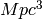
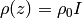
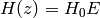
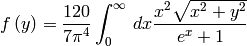
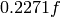
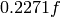
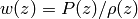
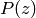
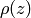

FLRW¶
- class astropy.cosmology.FLRW(H0, Om0, Ode0, Tcmb0=2.725, Neff=3.04, m_nu=<Quantity 0.0 eV>, name=None)[source] [edit on github]¶
Bases: astropy.cosmology.core.Cosmology
A class describing an isotropic and homogeneous (Friedmann-Lemaitre-Robertson-Walker) cosmology.
This is an abstract base class – you can’t instantiate examples of this class, but must work with one of its subclasses such as LambdaCDM or wCDM.
Parameters: H0 : float or scalar Quantity
Hubble constant at z = 0. If a float, must be in [km/sec/Mpc]
Om0 : float
Omega matter: density of non-relativistic matter in units of the critical density at z=0.
Ode0 : float
Omega dark energy: density of dark energy in units of the critical density at z=0.
Tcmb0 : float or scalar Quantity
Temperature of the CMB z=0. If a float, must be in [K]. Default: 2.725. Setting this to zero will turn off both photons and neutrinos (even massive ones)
Neff : float
Effective number of Neutrino species. Default 3.04.
m_nu : Quantity
Mass of each neutrino species. If this is a scalar Quantity, then all neutrino species are assumed to have that mass. Otherwise, the mass of each species. The actual number of neutrino species (and hence the number of elements of m_nu if it is not scalar) must be the floor of Neff. Usually this means you must provide three neutrino masses unless you are considering something like a sterile neutrino.
name : str
Optional name for this cosmological object.
Notes
Class instances are static – you can’t change the values of the parameters. That is, all of the attributes above are read only.
Attributes Summary
H0 Return the Hubble constant as an Quantity at z=0 Neff Number of effective neutrino species Ode0 Omega dark energy; dark energy density/critical density at z=0 Ogamma0 Omega gamma; the density/critical density of photons at z=0 Ok0 Omega curvature; the effective curvature density/critical density Om0 Omega matter; matter density/critical density at z=0 Onu0 Omega nu; the density/critical density of neutrinos at z=0 Tcmb0 Temperature of the CMB as Quantity at z=0 Tnu0 Temperature of the neutrino background as Quantity at z=0 critical_density0 Critical density as Quantity at z=0 h Dimensionless Hubble constant: h = H_0 / 100 [km/sec/Mpc] has_massive_nu Does this cosmology have at least one massive neutrino species? hubble_distance Hubble distance as Quantity hubble_time Hubble time as Quantity m_nu Mass of neutrino species Methods Summary
H(z) Hubble parameter (km/s/Mpc) at redshift z. Ode(z) Return the density parameter for dark energy at redshift z. Ogamma(z) Return the density parameter for photons at redshift z. Ok(z) Return the equivalent density parameter for curvature at redshift z. Om(z) Return the density parameter for non-relativistic matter at redshift z. Onu(z) Return the density parameter for massless neutrinos at redshift z. Tcmb(z) Return the CMB temperature at redshift z. Tnu(z) Return the neutrino temperature at redshift z. absorption_distance(z) Absorption distance at redshift z. age(z) Age of the universe in Gyr at redshift z. angular_diameter_distance(z) Angular diameter distance in Mpc at a given redshift. angular_diameter_distance_z1z2(z1, z2) Angular diameter distance between objects at 2 redshifts. arcsec_per_kpc_comoving(z) Angular separation in arcsec corresponding to a comoving kpc at redshift z. arcsec_per_kpc_proper(z) Angular separation in arcsec corresponding to a proper kpc at redshift z. clone(**kwargs) Returns a copy of this object, potentially with some changes. comoving_distance(z) Comoving line-of-sight distance in Mpc at a given redshift. comoving_transverse_distance(z) Comoving transverse distance in Mpc at a given redshift. comoving_volume(z) Comoving volume in cubic Mpc at redshift z. critical_density(z) Critical density in grams per cubic cm at redshift z. de_density_scale(z) Evaluates the redshift dependence of the dark energy density. differential_comoving_volume(z) Differential comoving volume at redshift z. distmod(z) Distance modulus at redshift z. efunc(z) Function used to calculate H(z), the Hubble parameter. inv_efunc(z) Inverse of efunc. kpc_comoving_per_arcmin(z) Separation in transverse comoving kpc corresponding to an arcminute at redshift z. kpc_proper_per_arcmin(z) Separation in transverse proper kpc corresponding to an arcminute at redshift z. lookback_time(z) Lookback time in Gyr to redshift z. luminosity_distance(z) Luminosity distance in Mpc at redshift z. nu_relative_density(z) Neutrino density function relative to the energy density in photons. scale_factor(z) Scale factor at redshift z. w(z) The dark energy equation of state. Attributes Documentation
- Neff¶
Number of effective neutrino species
- Ode0¶
Omega dark energy; dark energy density/critical density at z=0
- Ogamma0¶
Omega gamma; the density/critical density of photons at z=0
- Ok0¶
Omega curvature; the effective curvature density/critical density at z=0
- Om0¶
Omega matter; matter density/critical density at z=0
- Onu0¶
Omega nu; the density/critical density of neutrinos at z=0
- h¶
Dimensionless Hubble constant: h = H_0 / 100 [km/sec/Mpc]
- has_massive_nu¶
Does this cosmology have at least one massive neutrino species?
- m_nu¶
Mass of neutrino species
Methods Documentation
- H(z)[source] [edit on github]¶
Hubble parameter (km/s/Mpc) at redshift z.
Parameters: z : array_like
Input redshifts.
Returns: H : Quantity
Hubble parameter at each input redshift.
- Ode(z)[source] [edit on github]¶
Return the density parameter for dark energy at redshift z.
Parameters: z : array_like
Input redshifts.
Returns: Ode : ndarray, or float if input scalar
The density of non-relativistic matter relative to the critical density at each redshift.
- Ogamma(z)[source] [edit on github]¶
Return the density parameter for photons at redshift z.
Parameters: z : array_like
Input redshifts.
Returns: Ogamma : ndarray, or float if input scalar
The energy density of photons relative to the critical density at each redshift.
- Ok(z)[source] [edit on github]¶
Return the equivalent density parameter for curvature at redshift z.
Parameters: z : array_like
Input redshifts.
Returns: Ok : ndarray, or float if input scalar
The equivalent density parameter for curvature at each redshift.
- Om(z)[source] [edit on github]¶
Return the density parameter for non-relativistic matter at redshift z.
Parameters: z : array_like
Input redshifts.
Returns: Om : ndarray, or float if input scalar
The density of non-relativistic matter relative to the critical density at each redshift.
- Onu(z)[source] [edit on github]¶
Return the density parameter for massless neutrinos at redshift z.
Parameters: z : array_like
Input redshifts.
Returns: Onu : ndarray, or float if input scalar
The energy density of photons relative to the critical density at each redshift. Note that this includes their kinetic energy (if they have mass), so it is not equal to the commonly used
 ,
which does not include kinetic energy.
,
which does not include kinetic energy.
- Tcmb(z)[source] [edit on github]¶
Return the CMB temperature at redshift z.
Parameters: z : array_like
Input redshifts.
Returns: Tcmb : Quantity
The temperature of the CMB in K.
- Tnu(z)[source] [edit on github]¶
Return the neutrino temperature at redshift z.
Parameters: z : array_like
Input redshifts.
Returns: Tnu : Quantity
The temperature of the cosmic neutrino background in K.
- absorption_distance(z)[source] [edit on github]¶
Absorption distance at redshift z.
This is used to calculate the number of objects with some cross section of absorption and number density intersecting a sightline per unit redshift path.
Parameters: z : array_like
Input redshifts. Must be 1D or scalar.
Returns: d : float or ndarray
Absorption distance (dimensionless) at each input redshift.
References
Hogg 1999 Section 11. (astro-ph/9905116) Bahcall, John N. and Peebles, P.J.E. 1969, ApJ, 156L, 7B
- age(z)[source] [edit on github]¶
Age of the universe in Gyr at redshift z.
Parameters: z : array_like
Input redshifts. Must be 1D or scalar.
Returns: t : Quantity
The age of the universe in Gyr at each input redshift.
See also
- z_at_value
- Find the redshift corresponding to an age.
- angular_diameter_distance(z)[source] [edit on github]¶
Angular diameter distance in Mpc at a given redshift.
This gives the proper (sometimes called ‘physical’) transverse distance corresponding to an angle of 1 radian for an object at redshift z.
Weinberg, 1972, pp 421-424; Weedman, 1986, pp 65-67; Peebles, 1993, pp 325-327.
Parameters: z : array_like
Input redshifts. Must be 1D or scalar.
Returns: d : Quantity
Angular diameter distance in Mpc at each input redshift.
- angular_diameter_distance_z1z2(z1, z2)[source] [edit on github]¶
Angular diameter distance between objects at 2 redshifts. Useful for gravitational lensing.
Parameters: z1, z2 : array_like, shape (N,)
Input redshifts. z2 must be large than z1.
Returns: d : Quantity, shape (N,) or single if input scalar
The angular diameter distance between each input redshift pair.
Raises: CosmologyError
If omega_k is < 0.
Notes
This method only works for flat or open curvature (omega_k >= 0).
- arcsec_per_kpc_comoving(z)[source] [edit on github]¶
Angular separation in arcsec corresponding to a comoving kpc at redshift z.
Parameters: z : array_like
Input redshifts. Must be 1D or scalar.
Returns: theta : Quantity
The angular separation in arcsec corresponding to a comoving kpc at each input redshift.
- arcsec_per_kpc_proper(z)[source] [edit on github]¶
Angular separation in arcsec corresponding to a proper kpc at redshift z.
Parameters: z : array_like
Input redshifts. Must be 1D or scalar.
Returns: theta : Quantity
The angular separation in arcsec corresponding to a proper kpc at each input redshift.
- clone(**kwargs)[source] [edit on github]¶
Returns a copy of this object, potentially with some changes.
Returns: newcos : Subclass of FLRW
A new instance of this class with the specified changes.
Notes
This assumes that the values of all constructor arguments are available as properties, which is true of all the provided subclasses but may not be true of user-provided ones. You can’t change the type of class, so this can’t be used to change between flat and non-flat. If no modifications are requested, then a reference to this object is returned.
Examples
To make a copy of the Planck13 cosmology with a different Omega_m and a new name:
>>> from astropy.cosmology import Planck13 >>> newcos = Planck13.clone(name="Modified Planck 2013", Om0=0.35)
- comoving_distance(z)[source] [edit on github]¶
Comoving line-of-sight distance in Mpc at a given redshift.
The comoving distance along the line-of-sight between two objects remains constant with time for objects in the Hubble flow.
Parameters: z : array_like
Input redshifts. Must be 1D or scalar.
Returns: d : ndarray, or float if input scalar
Comoving distance in Mpc to each input redshift.
- comoving_transverse_distance(z)[source] [edit on github]¶
Comoving transverse distance in Mpc at a given redshift.
This value is the transverse comoving distance at redshift z corresponding to an angular separation of 1 radian. This is the same as the comoving distance if omega_k is zero (as in the current concordance lambda CDM model).
Parameters: z : array_like
Input redshifts. Must be 1D or scalar.
Returns: d : Quantity
Comoving transverse distance in Mpc at each input redshift.
Notes
This quantity also called the ‘proper motion distance’ in some texts.
- comoving_volume(z)[source] [edit on github]¶
Comoving volume in cubic Mpc at redshift z.
This is the volume of the universe encompassed by redshifts less than z. For the case of omega_k = 0 it is a sphere of radius comoving_distance but it is less intuitive if omega_k is not 0.
Parameters: z : array_like
Input redshifts. Must be 1D or scalar.
Returns: V : Quantity
Comoving volume in  at each input redshift.
- critical_density(z)[source] [edit on github]¶
Critical density in grams per cubic cm at redshift z.
Parameters: z : array_like
Input redshifts.
Returns: rho : Quantity
Critical density in g/cm^3 at each input redshift.
- de_density_scale(z)[source] [edit on github]¶
Evaluates the redshift dependence of the dark energy density.
Parameters: z : array_like
Input redshifts.
Returns: I : ndarray, or float if input scalar
The scaling of the energy density of dark energy with redshift.
Notes
The scaling factor, I, is defined by , and is given by
![I = \exp \left( 3 \int_{a}^1 \frac{ da^{\prime} }{ a^{\prime} }
\left[ 1 + w\left( a^{\prime} \right) \right] \right)](../_images/math/590fb79f8cb968d1148d1bd7aeae521244a2e319.png)
It will generally helpful for subclasses to overload this method if the integral can be done analytically for the particular dark energy equation of state that they implement.
- differential_comoving_volume(z)[source] [edit on github]¶
Differential comoving volume at redshift z.
Useful for calculating the effective comoving volume. For example, allows for integration over a comoving volume that has a sensitivity function that changes with redshift. The total comoving volume is given by integrating differential_comoving_volume to redshift z and multiplying by a solid angle.
Parameters: z : array_like
Input redshifts.
Returns: dV : Quantity
Differential comoving volume per redshift per steradian at each input redshift.
- distmod(z)[source] [edit on github]¶
Distance modulus at redshift z.
The distance modulus is defined as the (apparent magnitude - absolute magnitude) for an object at redshift z.
Parameters: z : array_like
Input redshifts. Must be 1D or scalar.
Returns: distmod : Quantity
Distance modulus at each input redshift, in magnitudes
See also
- z_at_value
- Find the redshift corresponding to a distance modulus.
- efunc(z)[source] [edit on github]¶
Function used to calculate H(z), the Hubble parameter.
Parameters: z : array_like
Input redshifts.
Returns: E : ndarray, or float if input scalar
The redshift scaling of the Hubble constant.
Notes
The return value, E, is defined such that .
It is not necessary to override this method, but if de_density_scale takes a particularly simple form, it may be advantageous to.
- inv_efunc(z)[source] [edit on github]¶
Inverse of efunc.
Parameters: z : array_like
Input redshifts.
Returns: E : ndarray, or float if input scalar
The redshift scaling of the inverse Hubble constant.
- kpc_comoving_per_arcmin(z)[source] [edit on github]¶
Separation in transverse comoving kpc corresponding to an arcminute at redshift z.
Parameters: z : array_like
Input redshifts. Must be 1D or scalar.
Returns: d : Quantity
The distance in comoving kpc corresponding to an arcmin at each input redshift.
- kpc_proper_per_arcmin(z)[source] [edit on github]¶
Separation in transverse proper kpc corresponding to an arcminute at redshift z.
Parameters: z : array_like
Input redshifts. Must be 1D or scalar.
Returns: d : Quantity
The distance in proper kpc corresponding to an arcmin at each input redshift.
- lookback_time(z)[source] [edit on github]¶
Lookback time in Gyr to redshift z.
The lookback time is the difference between the age of the Universe now and the age at redshift z.
Parameters: z : array_like
Input redshifts. Must be 1D or scalar
Returns: t : Quantity
Lookback time in Gyr to each input redshift.
See also
- z_at_value
- Find the redshift corresponding to a lookback time.
- luminosity_distance(z)[source] [edit on github]¶
Luminosity distance in Mpc at redshift z.
This is the distance to use when converting between the bolometric flux from an object at redshift z and its bolometric luminosity.
Parameters: z : array_like
Input redshifts. Must be 1D or scalar.
Returns: d : Quantity
Luminosity distance in Mpc at each input redshift.
See also
- z_at_value
- Find the redshift corresponding to a luminosity distance.
References
Weinberg, 1972, pp 420-424; Weedman, 1986, pp 60-62.
- nu_relative_density(z)[source] [edit on github]¶
Neutrino density function relative to the energy density in photons.
Parameters: z : array like
Redshift
Returns: f : ndarray, or float if z is scalar
The neutrino density scaling factor relative to the density in photons at each redshift
Notes
The density in neutrinos is given by

where

assuming that all neutrino species have the same mass. If they have different masses, a similar term is calculated for each one. Note that f has the asymptotic behavior
 .
This method returns  using an
analytical fitting formula given in Komatsu et al. 2011, ApJS 192, 18.
.
This method returns  using an
analytical fitting formula given in Komatsu et al. 2011, ApJS 192, 18.
- scale_factor(z)[source] [edit on github]¶
Scale factor at redshift z.
The scale factor is defined as
 .
.Parameters: z : array_like
Input redshifts.
Returns: a : ndarray, or float if input scalar
Scale factor at each input redshift.
- w(z)[source] [edit on github]¶
The dark energy equation of state.
Parameters: z : array_like
Input redshifts.
Returns: w : ndarray, or float if input scalar
The dark energy equation of state
Notes
The dark energy equation of state is defined as , where  is the pressure at redshift z and  is the density at redshift z, both in units where c=1.
This must be overridden by subclasses.